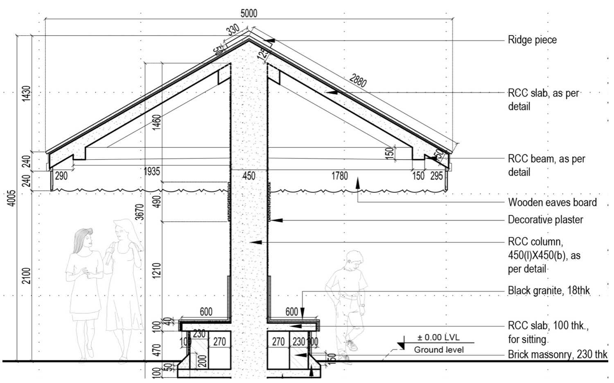

1 Factory of Taste
In this chapter, we will talk about standards used to create statistical charts. Why are standards so important? Let’s imagine that we’re preparing a number of reports, containing hundreds of charts. If each chart is completely different from the rest, then the reader will have to guess how to read that plot each time. The fatigue coming from deciphering the already complicated data will set in much quicker. The risk of misreading the chart will be greater and so will be the time necessary to parse the entire image. Professionals cannot commit such mistakes.
During my work in OECD I’ve seen how a team consisting of over ten analysts works on a report from the PISA study. The report prepared by this team was seen by thousands of people, ranging from specialists working on educational studies, through journalists, to parents interested in the diversity of teens’ skills in over 65 countries taking part in the PISA studies. Vital decisions concerning the educational system are often based on these results. For these results to be readable for such a wide audience, standardizing the charts is necessary.
1.1 Why do we need charts?
We create charts, to show the stories hidden in the data. The stories might be straightforward (e.g., in 2014 more children were born than in 2013) or complex (the number of children born is connected with the demographic structure, one of the important factors is the fact that people from the demographic boom are in the reproductive period, additionally the negative migration balance comes to play). The more complex the story is, the more effort is needed to present it in a readable way.
To express a simple story no chart is needed, in the case of a complex one - it is. Let’s illustrate it using data from the Polish National Census of Population and Housing from 2011.
Source: Gazeta Wyborcza.
Let’s compare three ways of telling the story about the number and structure of Polish population: a diagram on the margin, the table below and the description of the table below.
The Polish National Census of Population and Housing 2011 established that 38 511 800 people live in Poland, 51.6% of whom are women, and 48,4% of whom are men.
The whole story can be concluded with the statement that there are more women than men in the Polish population. Do we need a chart to show three numbers? Would a chart make them more understandable or provide some additional information? No and no. The table has a clear and simple to read structure. One sentence of description communicates the relevant information. And the chart? We like pictures but when it comes to showing information, this plot doesn’t show anything relevant.
The situation is different, when we have a complex announcement to convey, based on a large dataset. We will see a story of Polish final high-school exams in the years 2013-2014. Let’s compare the three ways of presenting this story: a text description, the table below and a picture.
The Polish Language exam scores have a distribution similar to a normal distribution. In the compared years the means of the distribution differ slightly. The distribution is disturbed in the neighborhood of 21-22 points, so near the values that is considered a passing grade (30/% of the possible score). There are hardly any students who scored one point below the passing grade, but there are many students, who passed the exam by scoring one point over. This suggests, that the teachers grading the exam decided to “find” the missing points for students who were just one point below the passing grade. When it comes to Math exam scores, the distributions are different in different years and they are very far from a normal distribution. Near the passing grade, there also is some irregularity, however, it is much smaller than for the Polish language exam.
The second story is based on over 220 numbers collected in an enormous table. In such a situation, the precision and structure of a table overfilled with data doesn’t give us any insight. There are too many numbers to quickly notice any kind of dependency, and the excerpt presented here is just a twelfth of the entire table. When it comes to the text description, the less focused readers can lose track of the conclusion. The description isn’t complete, and reading takes more than 10 seconds. For this story, the chart presents the data with almost the same accuracy as the table, but can be read much quicker. Illustrating the story skillfully allows for its more readable and fuller presentation.
How to create such memorable charts? You need two things. A knowledge of the basic principles of creating charts and lots and lots of practice in preparing plots yourself. The principles will be described in the following chapters of this book. In each chapter, there are tasks allowing you to actively practice the topics from the book. Abiding by these rules, you will be able to repeatably create readable and standardized charts. And standards are very important.
1.2 Musical notation
Musical notation - a symbolic language, using which almost all characteristics of musical sounds, rythms, melodies, harmonies, dynamics and articulation can be written
Source: Wikipedia.
An excelent example of a standard notation used by professionals is musical notation. The figure in the margin shows a fragment of Chopin’s Prelude No 7. It can be read by anyone who knows the notation, the basics of which we’re introduced to in primary school.
Why do composers stick to the musical notation, instead of creating their own ways to write music? Why don’t they color in the notes of draw pictures on the staff? Why aren’t there any suns, or cats or anything else?
It’s not the matter of print costs. The price of colored ink is not so high as to force everybody to use black-and-white musical notation. The reason is obviously the standard, which needs to be read consistently by the composer and the performer. Playing an instrument is a challenging task in itself so no musician wants to be distracted by additional stimuli such as colorful notes, perspective or staff decoration.
1.3 Technical drawing
*Technical drawing - a convention for graphical representation of machines, mechanisms, devices, constructions, circuits, systems etc., providing full information about the operation and production of elements as well as the installation of the depicted object.

Source: Wikipedia.
Dear Reader, have you ever wondered, why constructors adhere to a rigid framework of the technical drawing, instead of coloring and beautifying various elements of the project to graphically diversify their creations? Does that sound like heresy? Why doesn’t one constructor want to stand out from the others by drawing colorful three-dimensional arrows?
Similar to the example with musical notation, here the recipient of one project can be a large group of different people. In the municipal office, the drawing will be the basis for issuing the construction approval documents, the construction crew will use it to construct the building. Nobody wants communication errors. Misunderstood symbols might lead to the creation of non-functional buildings, and in the worst case to a disaster.
The constructor must think about many aspects connected with the functionality, safety and durability of devised constructions concurrently. But nobody expects them to come up with an original way to write their project. Creativity is needed for the project and not for the way of writing it down.
1.4 UML Diagrams
- Unified Modeling Language (UML) – semi-formalized language used to model different kinds of IT systems.

Source: Wikipedia.
Similar to the previous examples, an IT system designer needs to describe their project in such a way that it is made according to the specification. There is simply no place for ambiguity.
An IT project will be made by a numerous group of programmers and then verified by a large group of testers. They all need to be able to read the designer’s intentions to build the designed software. For this purpose special languages were developed (see the example in the margin) allowing their users to write down even the most complex systems visually, in a readable way.
Software engineering is a relatively young field, so there are numerous badly designed and described system which then stopped working. But issues with costly fixes of non-functioning software caused the standardization of processes, as well as the language for describing IT systems.
1.5 Electrical diagram
Electrical diagram – a graphical construction document, on which using graphical symbols, parts of an electrical circuit and connections between them are represented.

Source: Wikipedia.
You can create examples of many industries, for which standardization was necessary for a effective and faultless communication between creators and their audiences. The figure in the margin depicts an electrical diagram, on which standardized symbols illustrate inductors, resistors, switches and other elements. Each of those symbols has an unambiguous and strictly regulated meaning. Without this standardization, the effective production of developed circuits, based on a clear communication between designers of circuits and their creators and users, would not be possible.
In each of the above cases, standardization allowed for a wider reception of the developed solution. It made the unambiguous reception easier. These pictures are made by professionals and for professionals. A composer writes down melodies for a musician. A constructor describes a building for the building crew. An IT system designer characterizes the project for programmers etc.
1.6 What happens when there are no standards?
The creation of charts is a relatively young field and until now it was rarely taught on a large scale. In the primary school we learn notes, in high school we learn electrical diagrams, but there are few places, where you can learn how to create plots. Maybe this will change, and Data Literacy classes will be brought to primary schools, but for now only a narrow group of universities offered such a course. Still, most plot creators are self-taught, which sadly doesn’t do well for consistency in data presentation.
And the lack of standardization can lead to a mess. As an example we can study the report from the Statistics Poland concerning the Polish National Census of Population and Housing of 2011. The report is relatively short but it contains a lot of graphically represented data, often using bar charts (Główny Urząd Statystyczny 2012). Despite the fact that the same kind of plot is used, on different pages they are presented in very different ways. The figure above showcases 15 various examples from this report (and that’s not all of them). The plots differ in nearly every aspect. Sometimes the data is represented vertically, sometimes horizontally. Sometimes a 3D perspective is used, and sometimes it isn’t. Sometimes the bars have shadows, and sometimes they don’t. Sometimes they are red and blue, sometimes a gradient of navy blue is used, and sometimes they’re orange, yellow and green. It’s difficult to believe that they come from the same publication.
1.7 Communication standards concerning charts, a case study on the Statistics Poland
In the previous section, we’ve presented a report of the Statistics Poland full of inconsistent charts. However, there has been a lot of development in the manner of creating data reports in this institution since 2011.
An example of such activity is a set of rules concerning creating reports of maps (Statistics Poland 2017). The developed handbook depicts a lot of aspects of statistical communication and is full of specific and very practical advice, what to do and what not to do in data communication.

From this handbook the Figure 1.8 is sourced, explaining which projection should be used for presenting data on the map of Europe, and which projections should be avoided. The reports developed in conformance with these standards will be more consistent and it will be easier to compare results between the reports from various years, created by different people.

The Statistics Poland’s publication discusses not onlychoropleths, but also contains many useful and practical pieces of advice about the creation of charts. There are also recommendations for using different shapes (Figure 1.9). The use of shading, perspective, unnecessary gradients and other visual effects is discouraged.
The aforementioned standards additionally contain a set of interesting visual solutions for data presentation. An example is the choropleth from Figure 1.10, where the colors encode two variables – a percentage of people with higher education and the GDP per capita. The use of appropriate color scales allows for a significant compression of data presented on the chart.
1.8 Communication standards, a case study based on “The Economist” newspaper
Not only the reports of statistical offices are full of charts. Increasingly, advanced visualizations are included in newspapers and other information outlets. “The Economist”, “The Guardian”, “The New York Times” are some of the first large newspapers that have treated the data visualization standards in a serious way. Out of respect for their readers, the biggest and best newspapers came up with unified, readable and characteristic standards of data presentation and some of them even shared these standards publicly. An example of a newspaper which publicized their standards is “The Economist”.
The standards of “The Economist” (McLean 2017) contain very precise information on how large the graphical elements should be, both in the computer, as well as cell phone version. On one page of the newspaper, very often you can find a few diagrams. No wonder, that they need to be consistent.
The visual communication of “The Economist” is very coherent. In the standards, five kinds of charts are described: two types of bar charts, one of which contains overlaid bars, a scatter plot, a line plot and a temperature graph. For each of them very strict rules defining colors, typefaces, line thicknesses and what sizes of elements should be used to get a unified visual effect.
1.9 Communication standards, a case study based on the IBCS
The standards presented in the two previous subsections were developed for the internal purposes of the institutions. Both, the Statistics Poland, as well as “The Economist” created a set of standards so that their reports, newspapers, websites would be more visually consistent. But there are also standards developed for external organizations, with the same goal of making the communication more coherent. An example would be the International Business Communication Standards (2022). This set of rules was developed as a result of a cooperation of Rolf Hichert and Jürgen Faisst. Currently it is being developed in a very transparent manner by the IBCS organization. Most materials can be found for fre on the website of this organization.
In Figure 1.10 we’ve shown six chosen recommendations present in the IBCS standards. They correspond to a very operational tips: Don’t use irregular symbols to show data. Rely on standard shapes. Make sure that the intervals on the axes are of the same length. Start the bars at zero. Instead of pie charts, use the more informative bar charts. Do not use perspective, shadows and 3D effects – ever. Don’t use colors if they don’t bare any meaning.
Standards contain many very detailed tips and recommendation which are grouped into 7 rules of good communication. The rules with a short description are presented in the Table below.
| Rule | Description |
|---|---|
| Say | Convey a specific, relevant message. |
| Unify | Use unified markings. |
| Condense | Increase the amount of information in the smallest possible form factor. |
| Check | Make sure the charts and tables are coherent. |
| Express | Choose the right manner of presentation (description, plot, table) for the data. |
| Simplify | Avoid unnecessary decorations. |
| Structure | Make sure there is a readable structure. |
1.10 Tasks
Find an article, book or information outlet, which conveys information based on data. For example, you can use the BiQdata.pl portal, BeautifulNews or The New York Times. Based on this, perform the following tasks.
- Think about how complex the conveyed story is. How would it look like in the form of a table or text description? How long would a description conveying the same information be?
- Choose a chart and look at the SUCCESS rules. Does this chart conform to all seven rules?
- In this chapter, we’ve talked about four domains in which standardized symbols are used for visual communication. Find another domain/area of use in which standardized communication schemas are used.